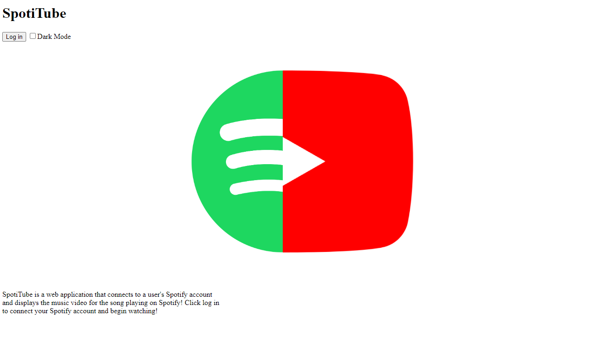
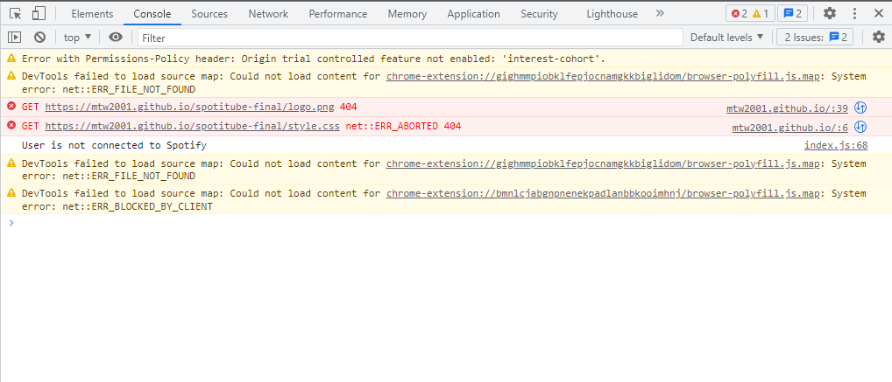

My final project is a web application that I have named SpotiTube. This application
plays the music video for the song that a user is listening to on Spotify. This works
by utilizing Spotify and Google APIs to gather information and display it to the user.
Users can log in to their Spotify account and authorize the app to access the song that
they are currently listening to. Then, the web application will use that information to
search Google for the first YouTube result, which provides the music video for the song.
Videos are shown to the user starting at the current time of the song being played on
Spotify, meaning that if the site is loaded 30 seconds into a song, the video will start
30 seconds in. Users also have the option to log out from their Spotify account and enable
or disabled a dark mode feature. To update the site and display a new video, the site must be
refreshed.
PROJECT HERE
GITHUB HERE
This project was an improved version of a project I made for HCDE 310, which was coded entirely
in Python and deployed using PythonAnywhere. I began this project by revisiting that project.
To start, I needed to figure out how to go through the OAuth 2.0 authorization flow for Spotify
API in Javascript. This was very tricky and seemed impossible to get working, but thanks to a
YouTube tutorial available
here
I was able to figure it out eventually.
At this point, I had finished my first prototype and had the web application successfully
gathering the song being played from Spotify. I then took a step back and thought about the
overall system of the web app. I felt like I was in over my head and my code was very sloppy
and unorganized. I then decided to rewrite what I had created using JQuery, which would
allow for cleaner API calls and allow me to update the HTML page efficiently. Learning the
basics of JQuery took a considerable amount of time, as well as rewriting my first prototype.
I found a very useful YouTube series on the basics of JQuery which is available
here.
Now, it was time to tackle the YouTube API part of the project, which was one of the issues
with my first version of this web application from the previous class. I began exploring
YouTube API documentation about quota limits. This means that there is a limited amount of
YouTube API calls that an application can make per day before it is cut off. This can be
avoided by requesting a higher quota limit. However, YouTube states that it won't give
this increase for personal or education projects. So, I had to once again take a step
back and think about other options. I decided to use a Google search API, which would
allow me to search for only www.youtube.com links. I implemented this successfully,
and thought that there was not a quota limit on these API calls. However, I was wrong and it
had very similar limits to the direct YouTube API. This is one of the shortcomings of my project.

After implementing the Google search API, it was time for CSS and some JQuery to make everything
work together. I made a login button that would prompt users to login to Spotify and would also
allow them to log out after. I also added some CSS styling such as fonts, colors, centering, and
text size. I then made essentially a home page and a page for when the user is logged in to Spotify.
This was accomplished by using JQuery to hide and show certain HTML elements based on the state of
the application. Finally, I had time to implement a dark mode which simply changes the background
of the page and the text color of the text in the body to white.
Finally, It was time to package my web app together and upload it to GitHub Pages. This process
gave me the most difficulties, but my application is now live at the above link! If it does not
appear to be working, this may mean that the Google Search API quota has been exceeded for the day.
After I uploaded my project to GitHub pages, my CSS and images were not loading. I spent a couple
hours trying to trouble shoot this online. I was getting 404 errors in my console whenever the site
was loaded, stating that the css file and .png files could not be found. This was strange because
those files were visible on my GitHub repository, but would still not load on the GitHub Pages site.

I eventually came up with a nifty workaround. I pulled the direct link to my images from my GitHub
repository and linked to an online version of them rather than pathing to them in my repository.
For the CSS file however, this method would not work. I decided to include all of my CSS directly
in my index.html file. This isn't ideal or good practice, but I could not figure out another way
to get my site to display correctly.
At the moment, the only way I would like to improve this site is to fix the issues with the API
quota limits. It is pretty disappointing that my site may not work at times, and is something
I would like to fix before including this project on my portfolio.
Also, I would love to further iterate upon my CSS styling of the site. Other aspects took up
a lot of my time for this project, and CSS was left pretty basic. This is something I could
update in my free time and play around with.
I would like to thank the Youtube videos that are linked above for helping me alot with the oAuth flow
and learning the basics of JQuery.
Overall, I think this project was a huge success! I was unsure if I would be able to get this project
working without the help of Python running in the background, but I was! There were a few shortcomings
such as the API quota issues. Also, I decided to not use Firebase, as it would not really add much to
the application. Additionally, I had planned to include features such as auto-fullscreen for videos,
but there are strict rules on how videos and sounds can be played on websites, and the features
I planned were not possible. Finally, I decided to not have the site refresh on its own when the song
on Spotify is played. This is because of the API quota issues. Keeping this requiring a manual refresh
of the site will decrease the amount of API calls when the site is left open.